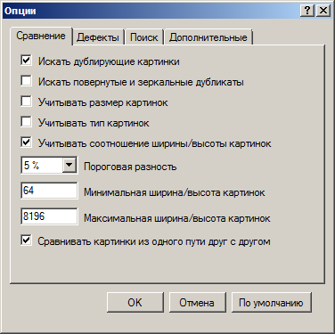
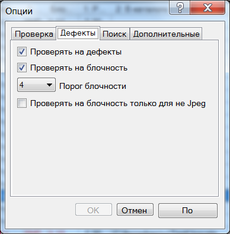
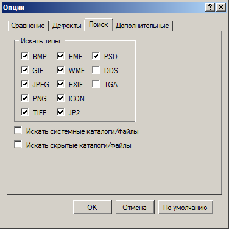

Окно опций
Настройка параметров поиска осуществляется в окне опций. Вызвать его можно либо из главного окна программы при помощи кнопки Опции

либо выбрав пункт Поиск - Опции в главном меню. В этом окне существуют три группы настроек: опции проверки, опции поиска и дополнительные опции. Каждая из этих групп расположена на соответствующей закладке.
Опции проверки
На закладке Проверка
располагаются следующие настройки:
Искать дублирующие картинки - определяет нужно искать дубликаты изображений. По умолчанию она включена.
Искать повернутые и зеркальные дубликаты - включение данной опции позволяет искать повернутые и зеркальные дубликаты изображений. При этом приходится делать гораздо больше сравнений, потому поиск замедляется в восемь раз. По умолчанию эта опция отключена.
Учитывать размер картинок - определяет, следует ли программе учитывать размер картинок. Например, при включении этого параметра картинки размерами 1024x768 и 800x600 будут считаться разными, даже если на них будет изображено одно и то же. По умолчанию данная опция отключена.
Учитывать тип картинок - определяет, следует ли программе учитывать тип изображений при сравнении. При включении этого параметра, например, картинки в форматах PNG и GIF будут считаться разными, независимо от их содержимого. По умолчанию опция отключена.
Учитывать соотношение ширины/высоты картинок - при включении данной опции программа проверяет соотношение ширины и высоты картинок. Это, например, позволяет не сравнивать квадратные и прямоугольные картинки между собой, что значительно ускоряет поиск. Степень различия соотношения ширины и высоты картинок регулируется параметром Точность соотношение ширины/высоты картинок, расположенном на закладке дополнительных опций (см. ниже). По умолчанию эта опция включена.
Пороговая разность - при сравнении картинок между собой, высчитывается среднеквадратическая отклонение яркости для каждой пары изображений. Если эта разность ниже значения, определяемого данным параметром, то картинки считаются дубликатами. Если установить этот параметр на низком уровне, то программа может не обнаружить некоторые дубликаты. А при нуле так вообще сможет находить только полностью идентичные изображения. Если же ему задать слишком большие значения, то увеличится вероятность ложных срабатываний. Кроме того стоит отметить, что увеличение этого параметра приводит к замедлению скорости работы алгоритма и наоборот. Он может меняться в интервале от 0 до 15 %. По умолчанию этот параметр равен 5 %. Данный параметр продублирован на панели инструментов.
Минимальная ширина/высота картинок - устанавливает минимальную ширину/высоту картинок необходимую, чтобы они проверялись на наличие дефектов или дубликатов. Эта опция позволяет исключить из поиска слишком маленькие изображения. По умолчанию этот параметр равен 64.
Максимальная ширина/высота картинок - устанавливает максимальную ширину/высоту картинок необходимую, чтобы они проверялись на наличие дефектов или дубликатов. Эта опция позволяет исключить из поиска слишком большие изображения. По умолчанию этот параметр равен 8192.
Сравнивать картинки из одного пути друг с другом - при включении этой опции программа сравнивает друг с другом картинки, расположенные в одном пути поиска. В противном случае программа будет сравнивать между собой только изображения из разных путей поиска. По умолчанию эта опция включена.
На закладке Дефекты
располагаются следующие настройки:
Проверять на дефекты - опция определяет, нужно ли проверять картинки на наличие дефектов. По умолчанию данная опция включена.
Проверять на блочность - опция определяет, нужно ли проверять картинки на наличие артефактов сжатия JPEG - блочности. Блочность определяется наибольшей суммой градиентов яркости для крайних пикселей блоков 8x8. По умолчанию данная опция включена.
Порог блочности - процент суммы градиентов, при котором изображение считается дефектным. 100% будет у шахматной черно-белой сетки с размером ячейки 8 пикселей. Подсчитанное значение не обязательно будет свидетельствовать о худшем визуальном качестве по сравнению с картинкой с меньшим значением и наоборот. По умолчанию этот параметр равен 10.
Проверять на блочность только для не Jpeg - опция определяет, нужно ли проверять картинки на наличие артефактов сжатия JPEG - блочности только не в Jpeg файлах. Это позволяет найти только пережатые изображения, не показывая просто сильно сжатые. Если в PNG или BMP файле присутствуют явные артефакты сжатия, то это говорит о том, что исходный файл был сохранен в другом формате с заведомо большим размером. По умолчанию данная опция выключена.
Проверять на размытость - опция определяет, нужно ли проверять картинки на слишком большую размытость изображения. Размытость рассчитывается градиентом второй производной (которая максимальна на линиях и краях) для оригинального изображения и его уменьшенных вариантов. Точное значение определяется методом линейной интерполяции. По умолчанию данная опция выключена.
Порог размытости - радиус размытости, при котором изображение считается дефектным. Пока алгоритм несовершенен и показывается высокая размытость для пейзажных изображений. По умолчанию этот параметр равен 4.
Заметим, что обязательно должна быть включена либо опция Проверять на дефекты, либо опция Искать дублирующие картинки.
Опции поиска
На закладке Поиск
располагаются следующие настройки:
Искать типы:
BMP - опция определяет, нужно ли искать картинки в формате BMP(BitMaP). Они обычно имеют расширения *.bmp, *.dib или *.rle. По умолчанию данная опция включена.
GIF - опция определяет, нужно ли искать картинки в формате GIF(Graphics Interchange Format). Они обычно имеют расширение *.gif. По умолчанию данная опция включена.
JPEG - опция определяет, нужно ли искать картинки в формате JPEG(Joint Photographic Experts Group). Они обычно имеют расширения *.jpeg, *.jfif, *.jpg, *.jpe, *.jiff, *.jif, *.j, *.jng или *.jff. По умолчанию данная опция включена.
PNG - опция определяет, нужно ли искать картинки в формате PNG(Portable Network Graphics). Они обычно имеют расширение *.png. По умолчанию данная опция включена.
TIFF - опция определяет, нужно ли искать картинки в формате TIFF(Tagged Image File Format). Они обычно имеют расширения *.tif или *.tiff. По умолчанию данная опция включена.
EMF - опция определяет, нужно ли искать картинки в формате EMF(Enhanced MetaFile). Они обычно имеют расширения *.emf или *.emz. По умолчанию данная опция включена.
WMF - опция определяет, нужно ли искать картинки в формате WMF(Windows MetaFile). Они обычно имеют расширение *.wmf. По умолчанию данная опция включена.
EXIF - опция определяет, нужно ли искать картинки в формате EXIF(EXchangeable Image File). Они обычно имеют расширение *.exif. По умолчанию данная опция включена.
ICON - опция определяет, нужно ли искать картинки в формате ICON(Windows ICON image format). Они обычно имеют расширения *.icon, *.ico или *.icn. По умолчанию данная опция включена.
JP2 - опция определяет, нужно ли искать картинки в формате JP2(JPEG 2000 image format). Они обычно имеют расширения *.jp2, *.j2k, *.j2c, *.jpc, *.jpf или *.jpx. По умолчанию данная опция включена.
PSD - опция определяет, нужно ли искать картинки в формате PSD(Photoshop Document). Они обычно имеют расширение *.psd. По умолчанию данная опция включена.
DDS - опция определяет, нужно ли искать картинки в формате DDS(DirectDraw Surface). Они обычно имеют расширение *.dds. По умолчанию данная опция включена.
TGA - опция определяет, нужно ли искать картинки в формате TGA(Truevision Graphics Adapter). Они обычно имеют расширение *.tga или *.tpic. По умолчанию данная опция включена.
Искать системные каталоги/файлы - опция определяет, нужно ли искать картинки в системных каталогах. По умолчанию данная опция выключена.
Искать скрытые каталоги/файлы - опция определяет, нужно ли искать картинки в скрытых каталогах. По умолчанию данная опция выключена.
Дополнительные опции
На закладке Дополнительные

располагаются следующие настройки:
Удалять в корзину - при включении данной опции файлы будут удаляться в корзину. В противном случае они удаляются безвозвратно. По умолчанию данная опция включена.
Запоминать ложные срабатывания - опция определяет, нужно ли использовать при поиске базу данных о ложных срабатываниях. Так пользователь при обработке результатов поиска может пометить ложные срабатывания, например, при помощи кнопки Пометить текущий результат как ошибочный на панели просмотра. Тогда при повторном поиске данные результаты больше показываться не будут. По умолчанию данная опция включена.
Точность соотношение ширины/высоты картинок - опция определяет точность, с которой должно соблюдаться соотношение ширины/высоты у сравниваемых картинок. Может принимать значения 1/8, 1/16, 1/32 либо 1/64. По умолчанию имеет значение 1/32.
Количество потоков сравнения - опция определяет число потоков сравнения, которые создаются при поиске дубликатов. Может принимать значения Авто(число потоков определяется программой), 1, ..., число процессорных ядер в системе. По умолчанию данный параметр имеет значение Авто.
Количество потоков загрузки - опция определяет число потоков загрузки картинок, которые создаются во время поиска. Может принимать значения Авто(число потоков определяется программой), 1, ..., число процессорных ядер в системе. По умолчанию данный параметр имеет значение Авто.
Отнормированный размер картинок - данный параметр можно описать следующим образом: так как изображения могут иметь абсолютно произвольный размер, то для корректного сравнения их нужно привести к общему знаменателю. Для этого все изображения масштабируются к одинаковому размеру и переводят в 8-битный серый цвет. Затем уже эти отнормированные изображения сравниваются между собой и хранятся в базе данных. Данная опция как раз и определяет размер этих изображений. Чем больше отнормированный размер картинок, тем выше точность работы программы. Отрицательными последствиями такого увеличения будет меньшая скорость работы программы, и большие требования к памяти и свободному месту на диске (для хранения базы данных о ранее сканированных изображениях). Может принимать значения 16х16, 32х32, 64х64 либо 128х128. По умолчанию имеет значение 32х32.
Размер очереди отмены - данный параметр регулирует максимальное количество действий, которые пользователь может отменить подряд. Данный параметр может изменяться в диапазоне от 0 до 16. По умолчанию имеет значение 10. Отметим, что для возможности отмены операции пользователя требуется сохранять промежуточное состояние программы, и произведенные данной операцией изменения. Так, при операции удаления изображений, происходит не удаление изображений, а их скрытие и переименование (полученные скрытые временные файлы удаляются позже). Естественно, что эти операции требуют дополнительных ресурсов и могут замедлять работу программы. При малом значении размера очереди отмены происходит экономия ресурсов программы. В частности, при нулевом значении этого параметра происходит прямое удаление файлов без их переименования и скрытия, что ускоряет работу программы.
Максимальное количество результатов - данный параметр регулирует максимальное количество результатов, которые программа может найти за один поиск. Так, если во время поиска программы будет достигнуто данное количество результатов, то поиск будет автоматически прекращен. Данное ограничение полезно для экономии ресурсов программы, выделяемых для графического представления списка результатов. По умолчанию данный параметр имеет значение 100000.
Ширина игнорируемой рамки картинки - данный параметр определяет ширину рамки изображения, содержание которой будет игнорироваться в процессе сравнения изображений. Данный параметр актуален, если нужно сравнивать картинки имеющие рамки разных цветов или небольшие надписи у края. По умолчанию данный параметр имеет значение 0 %.
Замечание: большинству пользователей лучше не менять параметры на этой закладке.